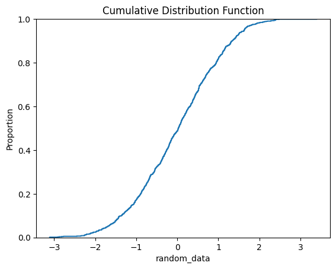

PMF, PDF, CDF - Code Examples#
Plots for PMF, PDF, CDF#
import pandas as pd
import numpy as np
import matplotlib.pyplot as plt
# Sample DataFrame
data = {'random_data': np.random.randn(1000)}
df = pd.DataFrame(data)
# Plotting the PDF using Pandas
df['random_data'].plot.density() # Kernel Density Estimate (KDE) plot
plt.title('Probability Density Function')
plt.show()

import seaborn as sns
import pandas as pd
import numpy as np
import matplotlib.pyplot as plt
# Sample DataFrame
data = {'random_data': np.random.randn(1000)}
df = pd.DataFrame(data)
# Plotting the PDF using Seaborn
sns.displot(df['random_data'], kind='kde') # Kernel Density Estimate (KDE) plot
plt.title('Probability Density Function')
plt.show()

import pandas as pd
import matplotlib.pyplot as plt
# Sample DataFrame with a discrete variable
data = {'dice_roll': [1, 2, 2, 3, 3, 3, 4, 4, 5, 6]}
df = pd.DataFrame(data)
# Calculate and plot the PMF
pmf = df['dice_roll'].value_counts(normalize=True).sort_index()
pmf.plot(kind='bar')
plt.title('Probability Mass Function')
plt.xlabel('Dice Roll')
plt.ylabel('Probability')
plt.show()

The CDF gives the probability that a random variable will take a value less than or equal to a certain value.
Using NumPy and Matplotlib: You can compute the CDF by sorting the data and then plotting it against the cumulative probabilities.
import pandas as pd
import numpy as np
import matplotlib.pyplot as plt
# Sample DataFrame
data = {'random_data': np.random.randn(1000)}
df = pd.DataFrame(data)
# Calculate and plot the CDF
x = np.sort(df['random_data'])
y = np.arange(1, len(x) + 1) / len(x)
plt.plot(x, y, marker='.', linestyle='none')
plt.title('Cumulative Distribution Function')
plt.xlabel('Value')
plt.ylabel('Cumulative Probability')
plt.show()

Using Seaborn: Seaborn’s ecdfplot provides a direct way to plot the Empirical Cumulative Distribution Function (ECDF).[8][11]
import seaborn as sns
import pandas as pd
import numpy as np
import matplotlib.pyplot as plt
# Sample DataFrame
data = {'random_data': np.random.randn(1000)}
df = pd.DataFrame(data)
# Plotting the CDF using Seaborn
sns.ecdfplot(data=df, x='random_data')
plt.title('Cumulative Distribution Function')
plt.show()

import pandas as pd
import numpy as np
from distfit import distfit
# Your DataFrame
df = pd.DataFrame({
'column1': np.random.normal(10, 2, 2000),
'column2': np.random.exponential(5, 2000)
})
dist = distfit()
dist.fit_transform(df['column1'])
dist.plot() # Visualizes the best fit
[distfit] >fit..
[distfit] >transform..
[distfit] >[norm ] [0.00 sec] [RSS: 0.0074896] [loc=10.043 scale=1.993]
[distfit] >[expon ] [0.00 sec] [RSS: 0.3853984] [loc=3.724 scale=6.319]
[distfit] >[pareto ] [0.00 sec] [RSS: 0.3853984] [loc=-536870908.276 scale=536870912.000]
[distfit] >[dweibull ] [0.02 sec] [RSS: 0.0111935] [loc=10.124 scale=1.706]
[distfit] >[t ] [0.15 sec] [RSS: 0.0074840] [loc=10.043 scale=1.992]
[distfit] >[genextreme] [0.05 sec] [RSS: 0.0084754] [loc=9.304 scale=1.978]
[distfit] >[gamma ] [0.07 sec] [RSS: 0.0072333] [loc=-74.115 scale=0.047]
[distfit] >[lognorm ] [0.00 sec] [RSS: 0.0072313] [loc=-115.900 scale=125.927]
[distfit] >[beta ] [0.12 sec] [RSS: 0.0072165] [loc=-66.710 scale=8596.306]
[distfit] >[uniform ] [0.00 sec] [RSS: 0.2595379] [loc=3.724 scale=12.956]
[distfit] >[loggamma ] [0.05 sec] [RSS: 0.0077714] [loc=-424.653 scale=62.999]
[distfit] >Compute confidence interval [parametric]
[distfit] >plot..
(<Figure size 1000x800 with 1 Axes>,
<Axes: title={'center': '\nbeta\na=1469.34, b=163096.95, loc=-66.71, scale=8596.31'}, xlabel='Values', ylabel='Frequency'>)
dist = distfit()
dist.fit_transform(df['column2'])
dist.plot() # Visualizes the best fit
[distfit] >fit..
[distfit] >transform..
[distfit] >[norm ] [0.00 sec] [RSS: 0.0337011] [loc=5.060 scale=5.205]
[distfit] >[expon ] [0.00 sec] [RSS: 0.0011196] [loc=0.002 scale=5.058]
[distfit] >[pareto ] [0.00 sec] [RSS: 0.0012155] [loc=-182.813 scale=182.815]
[distfit] >[dweibull ] [0.10 sec] [RSS: 0.0235230] [loc=3.279 scale=3.393]
[distfit] >[t ] [0.13 sec] [RSS: 0.0180819] [loc=3.405 scale=2.653]
[distfit] >[genextreme] [0.06 sec] [RSS: 0.0033189] [loc=2.336 scale=2.295]
[distfit] >[gamma ] [0.07 sec] [RSS: 0.0010753] [loc=0.002 scale=5.028]
[distfit] >[lognorm ] [0.00 sec] [RSS: 0.0011644] [loc=-0.394 scale=3.645]
[distfit] >[beta ] [0.12 sec] [RSS: 0.0011286] [loc=0.002 scale=800.137]
[distfit] >[uniform ] [0.00 sec] [RSS: 0.0846786] [loc=0.002 scale=46.488]
[distfit] >[loggamma ] [0.05 sec] [RSS: 0.0348923] [loc=-2007.354 scale=259.524]
[distfit] >Compute confidence interval [parametric]
[distfit] >plot..
(<Figure size 1000x800 with 1 Axes>,
<Axes: title={'center': '\ngamma\na=1.01, loc=0.00, scale=5.03'}, xlabel='Values', ylabel='Frequency'>)